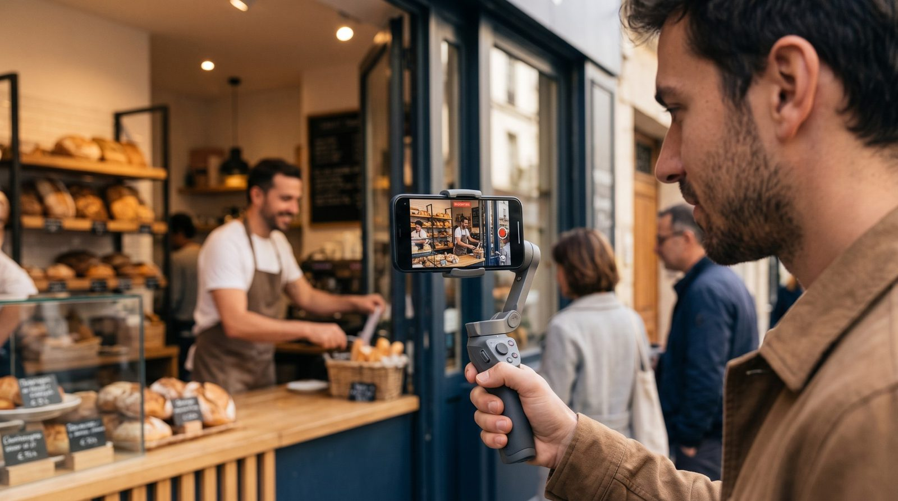
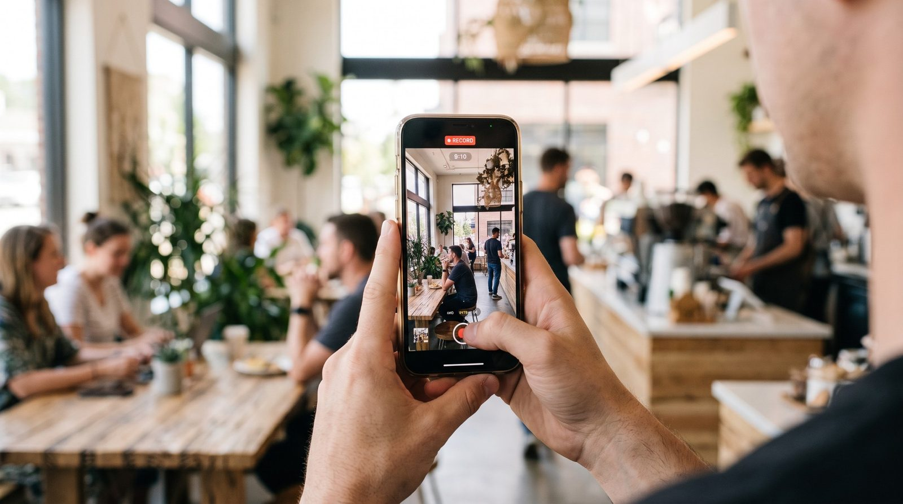
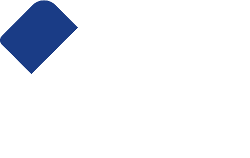
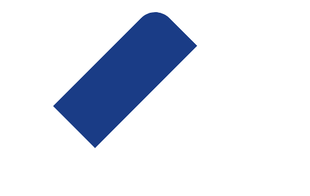
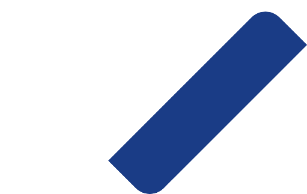
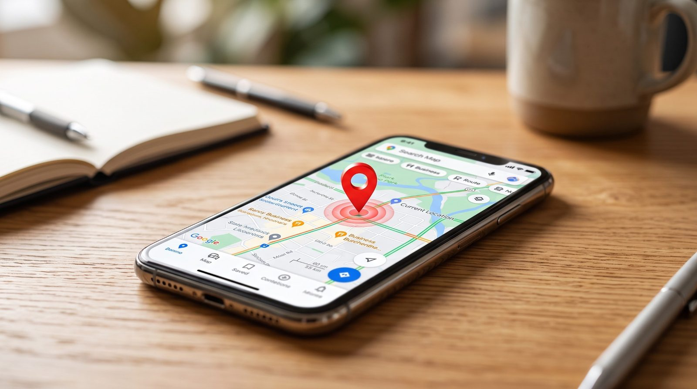

Vous apprenez en le faisant.
Sur votre propre entreprise.
Votre situation, vos objectifs, votre marché local.
Vous faites, on accompagne. Chez vous, sur vos vrais cas.
On prend du recul ensemble : ce qui marche, ce qu'il faut ajuster.
Vous repartez avec vos livrables et vos compétences.

Votre marché localFilmer, monter et diffuser
Concevoir, mettre en ligne, piloter
De la création à la première vente
Ciblage, prise de contact, relance
Formuler, construire, encadrer ses données
Un modèle ouvert, sur votre matériel
au titre des actions de formation
Il peut financer une partie de votre parcours.
30 minutes pour regarder
votre situation, concrètement.



Réservez votre diagnostic
Organisme de formation certifié Qualiopi
au titre des actions de formation ·
Montpellier · Béziers · Sète et environs